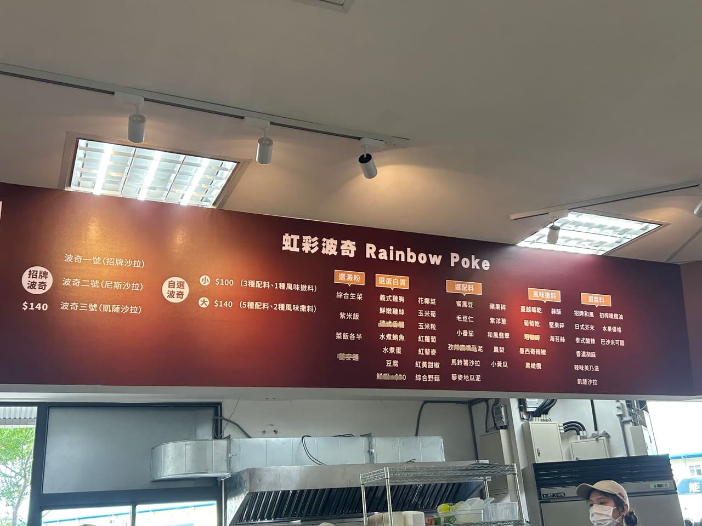
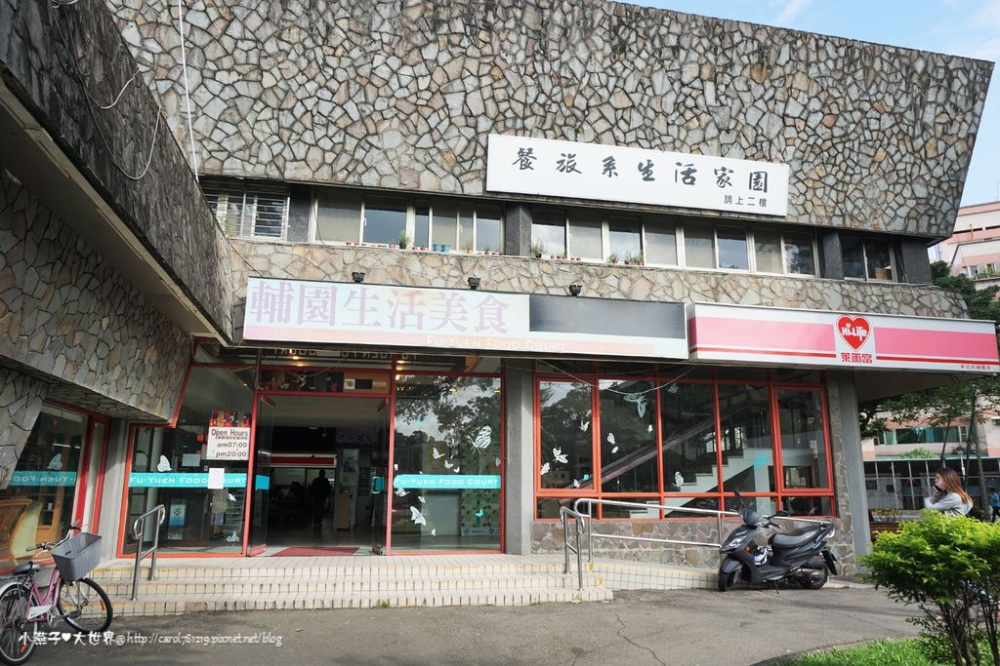

校內餐廳介紹
以往校內有六家餐廳，分別是心、仁、理、文、誠、輔。由於這學期學餐
由於這學期文園和仁園關閉故只剩以下四間

心園

理園

誠園

輔園
自助餐心園是目前所有學餐中CP值最高的，
便宜又大碗，味道也還不錯，如同外面自助餐。
唯一的問題是每日的出菜樣式都相同太常吃會膩，
但偶爾會有炸花枝，烤秋刀魚之類的特別菜色
理園內有:
1.咖哩飯
2.平價牛排
3.阿珠瑪韓式料理等餐廳
4.7-11
整體CP值比心園低了許多，價格和內容和外面餐廳差不了多少。
誠園內有:
1.咖哩 赤井
2.雞肉飯店
3.各種三泰路泰式小吃
4.誠園中式朝食
5.Sante 法式早午餐、健康餐
6.虹彩波奇 Ranibow Poke
7.麵屋 青
因為這學期文園關門，因地利之便雖然CP值並沒有心園那麼高但午餐時間也是非常多人。
輔園內有:
1.雲瀚哨子麵
2.廚師豬排
3.新東家早餐滷味
4.新羅韓式料理
5.八方雲集
6.食福簡餐炒飯專賣店
食物美味，價格是我覺得目前僅低於心園的餐廳